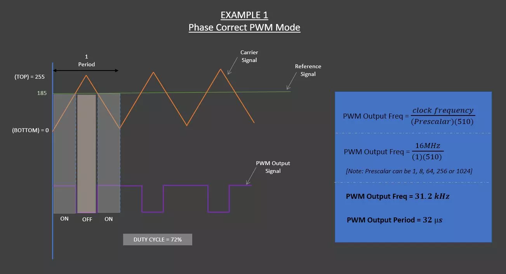
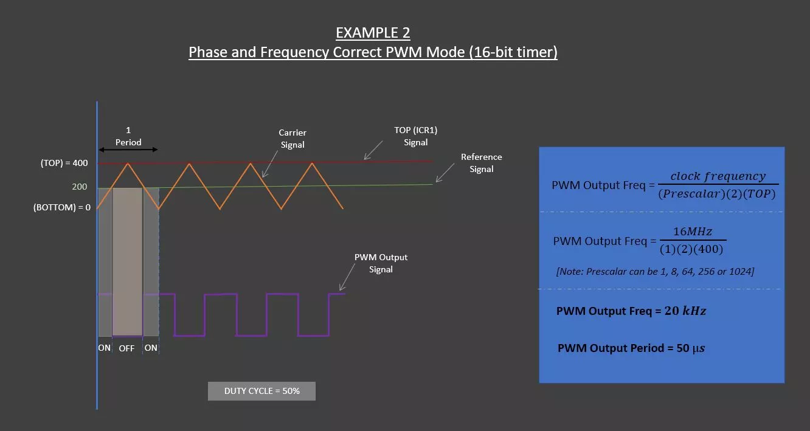

GeeKee CeeBee
Welcome to GeeKee CeeBee's Page: House of Mechatronics and Embedded Projects & Lessons.
Contact Email: Ceebee1108@gmail.com
Follow me on Youtube
__________________________________________________________________________________________________________________________________
PWM Output Frequencies Configuration

Disclaimer: The code and other information on this project are provided on "AS IS" basis with no warranty. Please follow best practices and assess your own potential risks for this project.
Components List
Arduino Uno (Affiliate Link)
or Arduino Nano (Affiliate Link)
DC Motor with Optical Rotary Encoder (TS-25GA370)
L298N Dual H-bridge Motor Driver (Affiliate Link)
DC Power Supply (6-12V) (Affiliate Link)
Jumper Wires and Breadboard (Affiliate Link)
Step-by-step video guide
Wiring Diagram


__________________________________________________________________________________________________________________________________
Arduino Code
//GeeKee CeeBee
//Phase Correct PWM Mode
void setup() {
pinMode(5, OUTPUT); // PWM Output pin (aka. OC0B)
pinMode(7, OUTPUT); // Motor direction pin
pinMode(A5,INPUT); // Analog read pin for potentiometer
digitalWrite(7,HIGH); // Set it High to configure direction for the motor driver
OCR0B =128; //reference signal
//Configure PWM Mode
TCCR0A = (1 << COM0B1) | (1 << COM0B0) | (1<< WGM00);
TCCR0B = (1<< CS00);
}
void loop() {
int pot = map(analogRead(A5),0,1023,0,255);
OCR0B = pot;
}
//GeeKee CeeBee
//Phase and Frequency Correct PWM Mode
void setup() {
ICR1 = 400; // TOP Signal
pinMode(9, OUTPUT); // PWM Output pin (aka. OC1A)
pinMode(7, OUTPUT); // Motor direction pin
pinMode(A5,INPUT); // Analog read pin for potentiometer
digitalWrite(7,HIGH); // Set it High to configure direction for the motor driver
OCR1A = 200; // reference signal ( should be less than Top (ICR1))
// Configure PWM Mode
TCCR1A = (1 << COM1A1) ;
TCCR1B = (1<< CS10)| (1<< WGM13);
}
void loop() {
int pot = map(analogRead(A5),0,1023,0,400);
OCR1A = pot; // For variable duty cycle
}